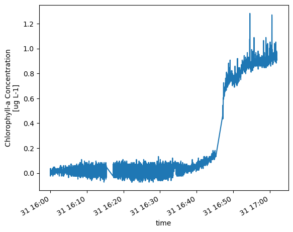

Shard complex multi-sensor datasets into individual sensors and single profiles#
Simple inspection of source / shard datasets in NetCDF files#
import xarray as xr
d = xr.open_dataset('/home/rob/redux2015/RCA_sb_sp_chlora_2015_365_656_6_V1.nc')
d
<xarray.Dataset>
Dimensions: (time: 3106)
Coordinates:
* time (time) datetime64[ns] 2015-12-31T16:00:00.599176192 ... 2015-12-...
Data variables:
depth (time) float64 ...
chlora (time) float64 ...d.chlora.plot()
[<matplotlib.lines.Line2D at 0x78973ede6a90>]

d.chlora.plot()
[<matplotlib.lines.Line2D at 0x78973ee7c810>]
d.chlora.plot()
[<matplotlib.lines.Line2D at 0x78973ebbda90>]
import xarray as xr
d = xr.open_dataset('~/ooidata/rca/sb/scalar/2017_flor/deployment0004_RS01SBPS-SF01A-3A-FLORTD101-streamed-flort_d_data_record_20171207T120000.396246-20180109T115959.698497.nc')
d
<xarray.Dataset>
Dimensions: (obs: 2231786)
Coordinates:
* obs (obs) int32 0 1 ... 2231785
lon (obs) float64 ...
lat (obs) float64 ...
depth (obs) float64 ...
time (obs) datetime64[ns] ...
Data variables: (12/44)
fluorometric_cdom (obs) float64 ...
signal_3_offset (obs) float32 ...
fluorometric_cdom_qc_executed (obs) uint8 ...
measurement_wavelength_cdom (obs) float32 ...
fluorometric_cdom_qartod_results (obs) uint8 ...
fluorometric_chlorophyll_a_qartod_results (obs) uint8 ...
... ...
signal_2_offset (obs) float32 ...
fluorometric_chlorophyll_a (obs) float64 ...
raw_internal_temp (obs) float32 ...
optical_backscatter (obs) float64 ...
fluorometric_cdom_qc_results (obs) uint8 ...
sea_water_temperature (obs) float64 ...
Attributes: (12/55)
node: SF01A
comment:
publisher_email:
sourceUrl: http://oceanobservatories.org/
collection_method: streamed
stream: flort_d_data_record
... ...
geospatial_lon_max: -125.389741
geospatial_lon_units: degrees_east
geospatial_lon_resolution: 0.1
geospatial_vertical_units: meters
geospatial_vertical_resolution: 0.1
geospatial_vertical_positive: downProfile tracking (this section is currently on pause)#
For a fixed site + year (example: Oregon Slope Base, 2016) create a metadata file tracking presence/absence
of the possible profiles: Quantity 365 * 9 profiles + 9 more in leap years. This is a record of what data are
actually present in the data system. This can be done from profileIndices but the actual yield in the reduxYYYY
folders is in some cases less; so work from the shard inventory.
This code intentionally disabled until revisited with intent.
"""
Generate CSV file tracking CTD temperature profile status for OOI RCA Slope Base shallow profiler.
Creates rca_sb_ctd_temp_profile_status.csv with daily profile availability (2014-2025).
"""
import csv
import datetime
from pathlib import Path
def is_leap_year(year):
"""Check if year is a leap year."""
return year % 4 == 0 and (year % 100 != 0 or year % 400 == 0)
def get_days_in_year(year):
"""Get number of days in year."""
return 366 if is_leap_year(year) else 365
def julian_to_date(year, julian_day):
"""Convert Julian day to dd-MON-yyyy format."""
date = datetime.datetime(year, 1, 1) + datetime.timedelta(days=julian_day - 1)
return date.strftime("%d-%b-%Y").upper()
def generate_profile_status_csv():
"""Generate the profile status CSV file."""
output_file = Path("rca_sb_ctd_temp_profile_status.csv")
# Define year range
start_year = 2014
end_year = 2025
# Column headers
headers = ['year', 'julian_day', 'date', '1', '2', '3', '4', '5', '6', '7', '8', '9', 'Total', 'Noon', 'Midnight']
total_days = 0
total_profiles = 0
with open(output_file, 'w', newline='') as csvfile:
writer = csv.writer(csvfile)
# Write headers
writer.writerow(headers)
# Generate rows for each year
for year in range(start_year, end_year + 1):
days_in_year = get_days_in_year(year)
for julian_day in range(1, days_in_year + 1):
date_str = julian_to_date(year, julian_day)
# Initialize profile columns (1-9) as 0 (will be populated when processing actual data)
profiles = [0] * 9
# Calculate totals
total_profiles_day = sum(profiles)
# Placeholder values for noon and midnight profile indices
noon_profile = 0 # Will be determined from actual profile timing
midnight_profile = 0 # Will be determined from actual profile timing
# Write row
row = [year, julian_day, date_str] + profiles + [total_profiles_day, noon_profile, midnight_profile]
writer.writerow(row)
total_days += 1
total_profiles += total_profiles_day
# Print diagnostics
print(f"Generated {output_file}")
print(f"Total days: {total_days}")
print(f"Date range: {start_year} - {end_year}")
print(f"Years covered: {end_year - start_year + 1}")
print(f"Current mean profiles per day: {total_profiles / total_days:.2f}")
print(f"Expected profiles per day when populated: 9")
print(f"File ready for population with actual profile data")
if __name__ == "__main__":
generate_profile_status_csv()
Cell In[6], line 1
This code intentionally disabled until revisited with intent.
^
SyntaxError: invalid syntax
Update (also disabled / on pause)#
Update the profile status program, write extracted profile files, create a timeline file
File intentionally disabled
"""
Extract individual temperature profiles from CTD NetCDF files to redux files.
"""
import pandas as pd
import xarray as xr
from pathlib import Path
def analyze_source_file(netcdf_file):
"""Analyze source NetCDF file time range and estimate profiles."""
ds = xr.open_dataset(netcdf_file)
ds = ds.swap_dims({'obs': 'time'})
start_time = pd.to_datetime(ds.time.values[0])
end_time = pd.to_datetime(ds.time.values[-1])
time_range_days = (end_time - start_time).days + 1
estimated_profiles = time_range_days * 9
print(f"=== SOURCE FILE ANALYSIS ===")
print(f"File: {netcdf_file}")
print(f"Start time: {start_time}")
print(f"End time: {end_time}")
print(f"Time range: {time_range_days} days")
print(f"Estimated profiles (9/day): {estimated_profiles}")
print(f"================================\n")
return ds, start_time, end_time
def load_profile_indices(year):
"""Load profile indices for given year."""
profile_file = Path(f"~/profileIndices/RS01SBPS_profiles_{year}.csv").expanduser()
if not profile_file.exists():
return None
return pd.read_csv(profile_file)
def extract_profiles(ds, start_time, end_time, output_dir):
"""Extract temperature profiles from NetCDF dataset."""
attempted = 0
successful = 0
for year in range(start_time.year, end_time.year + 1):
profiles_df = load_profile_indices(year)
if profiles_df is None:
print(f"No profile indices for {year}")
continue
daily_profiles = {}
for _, profile_row in profiles_df.iterrows():
attempted += 1
profile_index = profile_row['profile']
start_str = profile_row['start']
peak_str = profile_row['peak']
start_time_profile = pd.to_datetime(start_str)
peak_time_profile = pd.to_datetime(peak_str)
# Track daily profile sequence
date_key = start_time_profile.date()
if date_key not in daily_profiles:
daily_profiles[date_key] = 0
daily_profiles[date_key] += 1
daily_sequence = daily_profiles[date_key]
try:
profile_data = ds.sel(time=slice(start_time_profile, peak_time_profile))
if len(profile_data.time) == 0:
continue
# Check for sea_water_temperature data
if 'sea_water_temperature' not in profile_data.data_vars:
continue
# Create temperature dataset (rename variable)
temp_ds = xr.Dataset({
'temperature': profile_data['sea_water_temperature']
})
# Add depth coordinate if available
if 'depth' in profile_data.coords:
temp_ds = temp_ds.assign_coords(depth=profile_data['depth'])
# Generate filename: AAA_SSS_TTT_BBB_YYYY_DDD_PPPP_Q_VVVV.nc
julian_day = start_time_profile.timetuple().tm_yday
filename = f"RCA_OSB_Profiler_Temp_{year}_{julian_day:03d}_{profile_index}_{daily_sequence}_V1.nc"
output_path = output_dir / filename
# Write file
temp_ds.to_netcdf(output_path)
successful += 1
if successful % 50 == 0:
print(f"Extracted {successful} profiles...")
except Exception as e:
print(f"Error processing profile {profile_index}: {e}")
continue
return attempted, successful
def main():
"""Main processing function."""
output_dir = Path("~/redux").expanduser()
output_dir.mkdir(exist_ok=True)
ctd_file = Path("~/ooidata/rca/sb/scalar/2015_2025_ctd/deployment0004_RS01SBPS-SF01A-2A-CTDPFA102-streamed-ctdpf_sbe43_sample_20180208T000000.840174-20180226T115959.391002.nc").expanduser()
if not ctd_file.exists():
print(f"CTD file not found: {ctd_file}")
return
# Analyze source file first
ds, start_time, end_time = analyze_source_file(ctd_file)
# Extract profiles
attempted, successful = extract_profiles(ds, start_time, end_time, output_dir)
# Print diagnostics
print(f"\n=== EXTRACTION COMPLETE ===")
print(f"Profiles attempted: {attempted}")
print(f"Profiles successfully extracted: {successful}")
print(f"Success rate: {successful/attempted*100:.1f}%" if attempted > 0 else "No profiles attempted")
print(f"Redux files written to: {output_dir}")
if __name__ == "__main__":
main()
Compare CTD dissolved oxygen (2 data variables) with DO dissolved oxygen (1 data variable)#
Conclusion is that they are the same data.
# Compare data variables for CTD file versus DO file
import xarray as xr
#ds = xr.open_dataset('~/redux2018/RCA_sb_sp_temperature_2018_048_5440_9_V1.nc')
ds_ctd = xr.open_dataset('~/ooidata/rca/sb/scalar/2016_ctd/deployment0002_RS01SBPS-SF01A-2A-CTDPFA102-streamed-ctdpf_sbe43_sample_20160707T000000.194092-20160716T111049.607585.nc')
ds_do = xr.open_dataset('~/ooidata/rca/sb/scalar/2016_ctd/deployment0002_RS01SBPS-SF01A-2A-DOFSTA102-streamed-do_fast_sample_20160511T235959.098689-20160716T120000.633855.nc')
ds_ctd.data_vars.keys()
KeysView(Data variables:
sea_water_pressure_qc_results (obs) uint8 ...
sea_water_pressure (obs) float64 ...
sea_water_electrical_conductivity_qartod_results (obs) uint8 ...
corrected_dissolved_oxygen (obs) float64 ...
sea_water_pressure_qc_executed (obs) uint8 ...
sea_water_practical_salinity_qc_executed (obs) uint8 ...
driver_timestamp (obs) datetime64[ns] ...
id (obs) |S36 ...
conductivity (obs) float64 ...
temperature (obs) float64 ...
sea_water_temperature_qartod_results (obs) uint8 ...
corrected_dissolved_oxygen_qc_executed (obs) uint8 ...
corrected_dissolved_oxygen_qc_results (obs) uint8 ...
pressure_temp (obs) float64 ...
internal_timestamp (obs) datetime64[ns] ...
corrected_dissolved_oxygen_qartod_executed (obs) object ...
sea_water_electrical_conductivity_qc_executed (obs) uint8 ...
sea_water_density_qc_results (obs) uint8 ...
ext_volt0 (obs) float64 ...
sea_water_practical_salinity_qartod_results (obs) uint8 ...
sea_water_temperature_qc_results (obs) uint8 ...
sea_water_pressure_qartod_executed (obs) object ...
ingestion_timestamp (obs) datetime64[ns] ...
port_timestamp (obs) datetime64[ns] ...
sea_water_practical_salinity (obs) float64 ...
pressure (obs) float64 ...
sea_water_density_qc_executed (obs) uint8 ...
sea_water_temperature_qartod_executed (obs) object ...
deployment (obs) int32 ...
sea_water_practical_salinity_qc_results (obs) uint8 ...
do_fast_sample-corrected_dissolved_oxygen (obs) float64 ...
preferred_timestamp (obs) object ...
sea_water_electrical_conductivity (obs) float64 ...
corrected_dissolved_oxygen_qartod_results (obs) uint8 ...
sea_water_electrical_conductivity_qc_results (obs) uint8 ...
sea_water_temperature_qc_executed (obs) uint8 ...
sea_water_density (obs) float64 ...
sea_water_pressure_qartod_results (obs) uint8 ...
sea_water_electrical_conductivity_qartod_executed (obs) object ...
sea_water_temperature (obs) float64 ...
sea_water_practical_salinity_qartod_executed (obs) object ...)
# see above
ds_do.data_vars.keys()
KeysView(Data variables:
preferred_timestamp (obs) object ...
ingestion_timestamp (obs) datetime64[ns] ...
port_timestamp (obs) datetime64[ns] ...
deployment (obs) int32 ...
corrected_dissolved_oxygen_qc_executed (obs) uint8 ...
id (obs) |S36 ...
corrected_dissolved_oxygen (obs) float64 ...
corrected_dissolved_oxygen_qc_results (obs) uint8 ...
internal_timestamp (obs) datetime64[ns] ...
ext_volt0 (obs) float64 ...
driver_timestamp (obs) datetime64[ns] ...)
# sanity check quick plot of temperature versus depth
This code disabled: Please verify filename in use; I think it is incorrect
"""
Plot temperature profiles with temperature on x-axis and depth on y-axis.
"""
import matplotlib.pyplot as plt
import xarray as xr
from pathlib import Path
import sys
# Load the profile data
ds = xr.open_dataset('~/redux/RCA_OSB_Profiler_Temp_2018_048_5440_9_V1.nc')
# Extract temperature and depth
temperature = ds['temperature'].values
depth = ds['depth'].values
# Create the plot
plt.figure(figsize=(8, 10))
plt.plot(temperature, depth, 'b-', linewidth=2, marker='o', markersize=2)
# Set up axes
plt.xlabel('Temperature (°C)', fontsize=12)
plt.ylabel('Depth (m)', fontsize=12)
plt.ylim(200, 0) # 200m at bottom, 0m at top
plt.grid(True, alpha=0.3)
# Add title with filename
profile_name = Path('~/redux/RCA_OSB_Profiler_Temp_2018_048_5440_9_V1.nc').stem
plt.title(f'Temperature Profile: {profile_name}', fontsize=14)
# Tight layout and show
plt.tight_layout()
plt.show()
Generate Temperature Mixed Layer Depth estimates: Interactive (on pause)#
This code does not run in a Jupyter notebook: Mouse events not registering properly.
This code does run in IDLE or from the PowerShell command line.
The file is called tmld_selector.py.
The output file is tmld_estimates.csv.
In the home directory ~/argosy.
Eventually: Rename MLDSelector.py for Mixed Layer Depth Selector.
Bug: The bundle plotter gets the profile index wrong so MLD estimates show up in the wrong plot.
Use regular Python
Shard#
This is the main task of this notebook.
Profile count check#
This section compares profile files with the profile metadata in profileIndices.
First: Count the number of profile files found in the shard output folders. The folder
for year
from pathlib import Path
sensors = ['density', 'dissolvedoxygen', 'salinity', 'temperature', 'cdom', 'chlora', 'backscatter']
years = range(2014, 2027)
print(f"{'Year':<6} {'Density':<10} {'DO':<10} {'Salinity':<10} {'Temperat':<10} {'CDOM':<10} {'ChlA':<10} {'back':<10}")
print("-" * 86)
for year in years:
redux_folder = Path.home() / f'redux{year}'
if redux_folder.exists():
counts = []
for sensor in sensors:
count = len(list(redux_folder.glob(f'RCA_sb_sp_{sensor}_*.nc')))
counts.append(count)
print(f"{year:<6} {counts[0]:<10} {counts[1]:<10} {counts[2]:<10} {counts[3]:<10} {counts[4]:<10} {counts[5]:<10} {counts[6]:<10}")
else:
print(f"{year:<6} {'N/A':<10} {'N/A':<10} {'N/A':<10} {'N/A':<10} {'N/A':<10} {'N/A':<10} {'N/A':<10}")
Year Density DO Salinity Temperat CDOM ChlA back
--------------------------------------------------------------------------------------
2014 0 0 0 0 0 0 0
2015 659 659 659 659 586 586 586
2016 2953 2953 2953 2953 2953 2953 2953
2017 1409 1409 1409 1409 1409 1409 1409
2018 1849 1849 1849 1849 1852 1852 1852
2019 2105 2105 2105 2105 2103 2103 2103
2020 1281 1281 1281 1281 1272 1272 1272
2021 2690 2690 2690 2690 2934 2934 2934
2022 2193 2193 2193 2193 2350 2350 2350
2023 785 785 785 785 1395 1395 1395
2024 1802 1802 1802 1802 2298 2298 2298
2025 2827 2827 2827 2827 1599 1599 1599
2026 0 0 0 0 0 0 0
# Determine the number of profiles in the profileIndices metadata resource
# The result is printed as a two-column table: year ~ profile count.
from pathlib import Path
import pandas as pd
profile_folder = Path.home() / 'profileIndices'
years = range(2014, 2027)
print(f"{'Year':<6} {'Profiles':<10}")
print("-" * 16)
for year in years:
profile_file = profile_folder / f'RS01SBPS_profiles_{year}.csv'
if profile_file.exists():
df = pd.read_csv(profile_file)
count = len(df)
print(f"{year:<6} {count:<10}")
else:
print(f"{year:<6} {'N/A':<10}")
Year Profiles
----------------
2014 N/A
2015 659
2016 2953
2017 1409
2018 1855
2019 2105
2020 1281
2021 2973
2022 2359
2023 1397
2024 2298
2025 2827
2026 13
The table below compares profiles found in profileIndices (column 2) to those found in the
redux folders. All four original CTD sensor types – density, dissolved oxygen, salinity
and temperature – have the same number of profiles. This table shows that profileIndices
can for some years see more profiles than were recovered in the data order from OOINET. For
example 2024 has 2298 profiles in profileIndices but only 1802 profile files were generated.
Year Profiles CTD profile count
--------------------------------------
2014 N/A N/A
2015 659 659
2016 2953 2953
2017 1409 1409
2018 1855 1849
2019 2105 2105
2020 1281 1281
2021 2973 2690
2022 2359 2193
2023 1397 785
2024 2298 1802
2025 2827 2827
S3 Parity With localhost (redux)#
This section compares shard content in localhost ~/reduxYYYY with that found in the S3 bucket epipelargosy.
Written for sensors { density, do, salinity, temperature } we have an assessment program in ~/argosy. Run:
python assess_synch.py
At the moment this produces:
Year dens-local dens-s3 diss-local diss-s3 sali-local sali-s3 temp-local temp-s3
--------------------------------------------------------------------------------
2015 659 659 659 659 659 659 659 659
2016 2953 2953 2953 2953 2953 2953 2953 2953
2017 1409 1409 1409 1409 1409 1409 1409 1409
2018 1849 1849 1849 1849 1849 1849 1849 1849
2019 2105 2039 2105 1643 2105 1644 2105 1628
2020 1281 1281 1281 1281 1281 853 1281 0
2021 2690 0 2690 0 2690 0 2690 0
2022 2193 0 2193 0 2193 0 2193 0
2023 785 0 785 0 785 0 785 0
2024 1802 0 1802 0 1802 0 1802 0
2025 2827 0 2827 0 2827 0 2827 0
2026 0 0 0 0 0 0 0 0
Notice 2019+ is incomplete.
The epipelargosy s3 bucket is mounted locally using mount-s3 as s3 with subfolders reduxYYYY.
The S3 bucket is to mirror the localhost reduxYYYY folders for external data sharing. There is
a dedicated Python program ~/argosy/redux_s3_synch.py as well as the code in the cell below.
The CA provides the code feature list:
Code is safe to run multiple times: It only copies missing files. “Idempotent.”
It can be interrupted and restarted
If it hits an error: It continues to run and reports errors at the end
It uses set lookup for O(1) existence checks
Use Standalone Python if:
Long-running operation (hours)
Want to run in background/tmux/screen
Need to schedule with cron
Want to redirect output to log file
Use Jupyter if:
Interactive monitoring preferred
Want to modify/test incrementally
Shorter operation (< 30 min)
Already working in notebook
For a large data sync: Suggestion is to run as a standalone background job:
nohup python redux_s3_synch.py > sync_console.log 2>&1 &
"""
synchronize localhost redux with S3 bucket by moving files to S3
This is the Jupyter cell version of the standalone Python.
Partially tested code:
- VERIFIED: Runs fast and halts when all copies have already been completed
- Does copying fairly efficiently and in the desired order from sorted filenames
This code presumes there are redux NetCDF files on localhost to copy to
the S3 `epipelargosy` bucket using the AWS CLI. It is intended to work
quickly by bulk listing.
Stops after 20 cumulative errors. Logs progress to a log file in ~ (not ~/argosy).
"""
from pathlib import Path
import subprocess
from datetime import datetime
# Configuration
LOCAL_BASE = Path.home()
S3_BUCKET = 'epipelargosy'
YEARS = range(2015, 2026)
LOG_FILE = Path.home() / 'redux_sync.log'
MAX_ERRORS = 20
# Sensor types in alphabetical order
SENSORS = ['density', 'dissolvedoxygen', 'salinity', 'temperature']
def log(message):
"""Write message to log file and print to console."""
timestamp = datetime.now().strftime('%Y-%m-%d %H:%M:%S')
log_line = f"[{timestamp}] {message}\n"
with open(LOG_FILE, 'a') as f:
f.write(log_line)
print(log_line.strip())
def get_s3_files(s3_prefix):
"""Get set of all filenames in S3 at given prefix."""
try:
result = subprocess.run(
['aws', 's3', 'ls', s3_prefix],
capture_output=True,
timeout=30,
text=True
)
if result.returncode != 0:
return set()
# Parse output lines to extract filenames
filenames = set()
for line in result.stdout.strip().split('\n'):
if line:
parts = line.split()
if len(parts) >= 4:
filenames.add(parts[-1])
return filenames
except:
return set()
def parse_filename(filename):
"""Parse redux filename to extract sorting keys.
Returns (julian_day, profile_index, sensor_index) or None if invalid.
"""
try:
parts = filename.stem.split('_')
if len(parts) < 8:
return None
sensor = parts[3]
julian_day = int(parts[5])
profile_index = int(parts[7])
if sensor not in SENSORS:
return None
sensor_index = SENSORS.index(sensor)
return (julian_day, profile_index, sensor_index)
except:
return None
def sync_redux_to_s3():
"""Sync all redux folders to S3."""
total_copied = 0
total_skipped = 0
total_errors = 0
start_time = datetime.now()
log(f"Starting sync at {start_time.strftime('%Y-%m-%d %H:%M:%S')}")
log(f"Local base: {LOCAL_BASE}")
log(f"S3 bucket: s3://{S3_BUCKET}")
log(f"Log file: {LOG_FILE}")
for year in YEARS:
if total_errors >= MAX_ERRORS:
log(f"ERROR LIMIT REACHED: {total_errors} errors. Stopping sync.")
break
local_dir = LOCAL_BASE / f'redux{year}'
if not local_dir.exists():
log(f"Skipping {year}: local directory not found")
continue
year_start_time = datetime.now()
log(f"Synching year {year} begin at {year_start_time.strftime('%Y-%m-%d %H:%M:%S')}")
# Get all NetCDF files and sort them
local_files = list(local_dir.glob('RCA_sb_sp_*.nc'))
if not local_files:
log(f"Year {year}: No files found")
continue
# Sort files by julian day, profile index, sensor
sorted_files = []
for f in local_files:
sort_key = parse_filename(f)
if sort_key:
sorted_files.append((sort_key, f))
sorted_files.sort(key=lambda x: x[0])
local_files = [f for _, f in sorted_files]
# Get existing S3 files once for this year
s3_prefix = f"s3://{S3_BUCKET}/redux{year}/"
existing_s3_files = get_s3_files(s3_prefix)
log(f"Year {year}: {len(existing_s3_files)} files already in S3")
year_copied = 0
year_skipped = 0
year_errors = 0
for local_file in local_files:
if total_errors >= MAX_ERRORS:
log(f"ERROR LIMIT REACHED during year {year}. Stopping.")
break
# Skip if file already exists on S3
if local_file.name in existing_s3_files:
year_skipped += 1
continue
s3_path = f"s3://{S3_BUCKET}/redux{year}/{local_file.name}"
try:
log(f"Copying: {local_file.name}")
result = subprocess.run(
['aws', 's3', 'cp', str(local_file), s3_path],
capture_output=True,
timeout=300,
text=True
)
if result.returncode == 0:
year_copied += 1
else:
raise Exception(f"AWS CLI error: {result.stderr}")
except Exception as e:
log(f"ERROR copying {local_file.name}: {e}")
year_errors += 1
total_errors += 1
year_end_time = datetime.now()
year_elapsed = (year_end_time - year_start_time).total_seconds()
log(f"Synching year {year} complete at {year_end_time.strftime('%Y-%m-%d %H:%M:%S')}")
log(f"Year {year}: {year_copied} copied, {year_skipped} skipped, {year_errors} errors ({year_elapsed:.1f}s)")
total_copied += year_copied
total_skipped += year_skipped
end_time = datetime.now()
log(f"Sync complete at {end_time.strftime('%Y-%m-%d %H:%M:%S')}")
log(f"Total: {total_copied} copied, {total_skipped} skipped, {total_errors} errors")
if total_errors >= MAX_ERRORS:
log(f"STOPPED DUE TO ERROR LIMIT")
return 1
return 0
# Run the sync
sync_redux_to_s3()
[2026-02-28 08:59:01] Starting sync at 2026-02-28 08:59:01
[2026-02-28 08:59:01] Local base: /home/rob
[2026-02-28 08:59:01] S3 bucket: s3://epipelargosy
[2026-02-28 08:59:01] Log file: /home/rob/redux_sync.log
[2026-02-28 08:59:01] Synching year 2015 begin at 2026-02-28 08:59:01
[2026-02-28 08:59:03] Year 2015: 2636 files already in S3
[2026-02-28 08:59:03] Synching year 2015 complete at 2026-02-28 08:59:03
[2026-02-28 08:59:03] Year 2015: 0 copied, 2636 skipped, 0 errors (1.9s)
[2026-02-28 08:59:03] Synching year 2016 begin at 2026-02-28 08:59:03
[2026-02-28 08:59:07] Year 2016: 11812 files already in S3
[2026-02-28 08:59:07] Synching year 2016 complete at 2026-02-28 08:59:07
[2026-02-28 08:59:07] Year 2016: 0 copied, 11812 skipped, 0 errors (4.6s)
[2026-02-28 08:59:07] Synching year 2017 begin at 2026-02-28 08:59:07
[2026-02-28 08:59:10] Year 2017: 5636 files already in S3
[2026-02-28 08:59:10] Synching year 2017 complete at 2026-02-28 08:59:10
[2026-02-28 08:59:10] Year 2017: 0 copied, 5636 skipped, 0 errors (2.4s)
[2026-02-28 08:59:10] Synching year 2018 begin at 2026-02-28 08:59:10
[2026-02-28 08:59:13] Year 2018: 7396 files already in S3
[2026-02-28 08:59:13] Synching year 2018 complete at 2026-02-28 08:59:13
[2026-02-28 08:59:13] Year 2018: 0 copied, 7396 skipped, 0 errors (3.6s)
[2026-02-28 08:59:13] Synching year 2019 begin at 2026-02-28 08:59:13
[2026-02-28 08:59:17] Year 2019: 8420 files already in S3
[2026-02-28 08:59:17] Synching year 2019 complete at 2026-02-28 08:59:17
[2026-02-28 08:59:17] Year 2019: 0 copied, 8420 skipped, 0 errors (4.0s)
[2026-02-28 08:59:17] Synching year 2020 begin at 2026-02-28 08:59:17
[2026-02-28 08:59:20] Year 2020: 5124 files already in S3
[2026-02-28 08:59:20] Synching year 2020 complete at 2026-02-28 08:59:20
[2026-02-28 08:59:20] Year 2020: 0 copied, 5124 skipped, 0 errors (2.3s)
[2026-02-28 08:59:20] Synching year 2021 begin at 2026-02-28 08:59:20
[2026-02-28 08:59:24] Year 2021: 10760 files already in S3
[2026-02-28 08:59:24] Synching year 2021 complete at 2026-02-28 08:59:24
[2026-02-28 08:59:24] Year 2021: 0 copied, 10760 skipped, 0 errors (4.5s)
[2026-02-28 08:59:24] Synching year 2022 begin at 2026-02-28 08:59:24
[2026-02-28 08:59:28] Year 2022: 8772 files already in S3
[2026-02-28 08:59:28] Synching year 2022 complete at 2026-02-28 08:59:28
[2026-02-28 08:59:28] Year 2022: 0 copied, 8772 skipped, 0 errors (4.4s)
[2026-02-28 08:59:28] Synching year 2023 begin at 2026-02-28 08:59:28
[2026-02-28 08:59:30] Year 2023: 3140 files already in S3
[2026-02-28 08:59:30] Synching year 2023 complete at 2026-02-28 08:59:30
[2026-02-28 08:59:30] Year 2023: 0 copied, 3140 skipped, 0 errors (1.8s)
[2026-02-28 08:59:30] Synching year 2024 begin at 2026-02-28 08:59:30
[2026-02-28 08:59:34] Year 2024: 7208 files already in S3
[2026-02-28 08:59:34] Synching year 2024 complete at 2026-02-28 08:59:34
[2026-02-28 08:59:34] Year 2024: 0 copied, 7208 skipped, 0 errors (3.4s)
[2026-02-28 08:59:34] Synching year 2025 begin at 2026-02-28 08:59:34
[2026-02-28 08:59:38] Year 2025: 11308 files already in S3
[2026-02-28 08:59:38] Synching year 2025 complete at 2026-02-28 08:59:38
[2026-02-28 08:59:38] Year 2025: 0 copied, 11308 skipped, 0 errors (4.8s)
[2026-02-28 08:59:38] Sync complete at 2026-02-28 08:59:38
[2026-02-28 08:59:38] Total: 0 copied, 82212 skipped, 0 errors
0